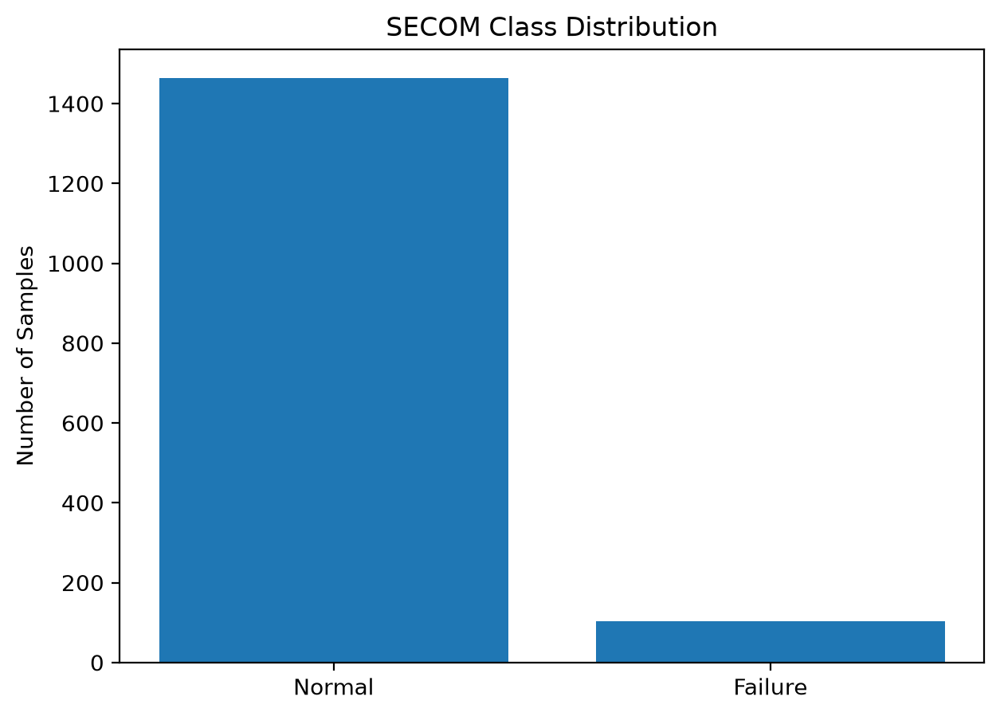
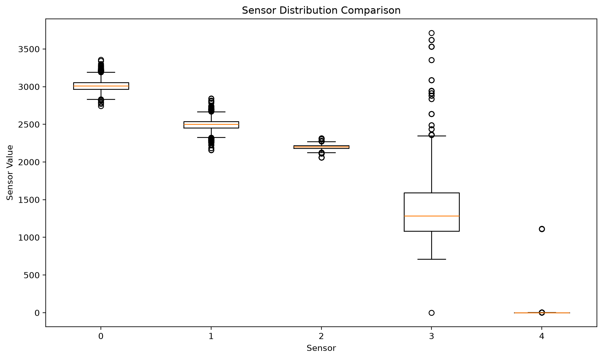
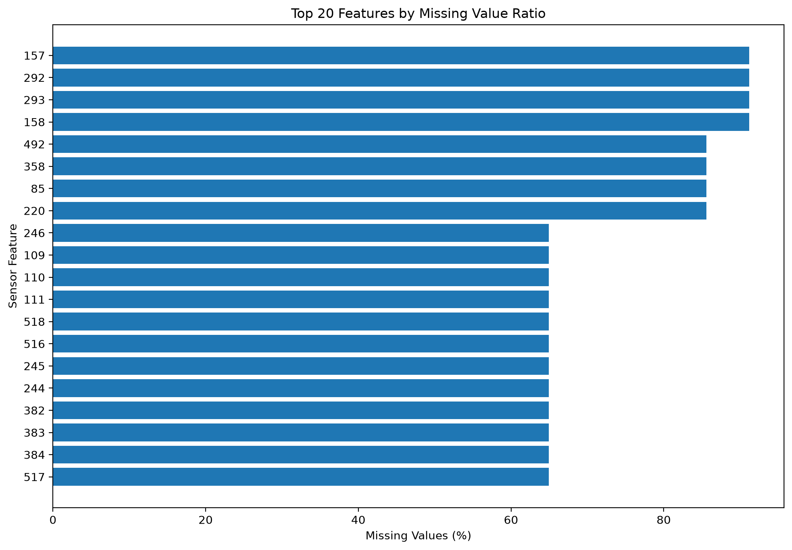
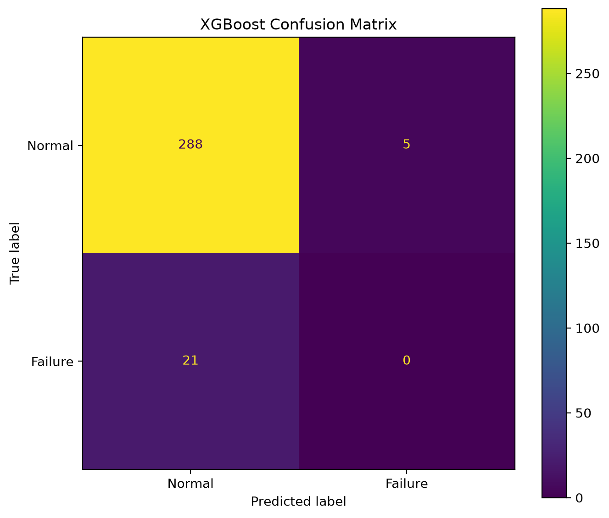
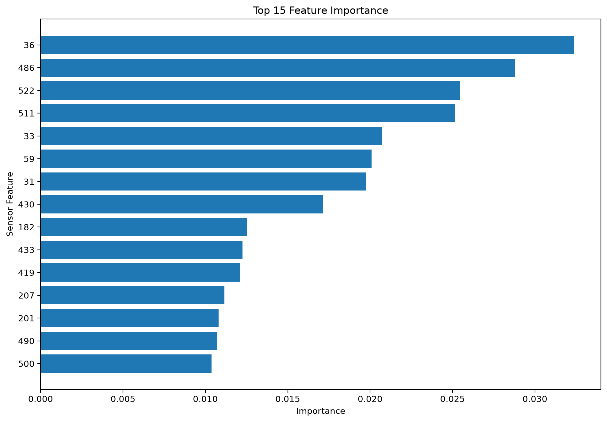

Pass / Fail Class Distribution

결과 해석 · 공정 관점
정상 1,463건, 불량 104건으로 클래스가 크게 불균형합니다. 수율 관리에서는 정확도만으로 모델을 판단하지 않고 불량 클래스의 검출 성능을 함께 확인해야 합니다.
SECOM 반도체 제조 데이터를 활용하여 공정 센서 변수와 Pass/Fail 간의 관계를 분석하고 수율 예측 모델을 구성한 프로젝트입니다.
UCI SECOM 기반 데이터로 약 1,500개 이상의 공정 샘플과 수백 개의 센서 변수를 포함합니다.
공정 센서 데이터의 결측치를 처리하고, 정상/불량 데이터를 기준으로 예측 모델을 학습했습니다.
실제 제조 환경에서는 단순 예측 정확도뿐 아니라 불량 샘플 탐지율, 클래스 불균형, 주요 센서의 공정 의미를 함께 확인해야 합니다.
아래 그래프는 해당 Python 노트북에서 실제 실행되어 저장된 출력입니다.

결과 해석 · 공정 관점
정상 1,463건, 불량 104건으로 클래스가 크게 불균형합니다. 수율 관리에서는 정확도만으로 모델을 판단하지 않고 불량 클래스의 검출 성능을 함께 확인해야 합니다.

결과 해석 · 공정 관점
선택 센서의 측정 범위와 산포가 다르고 이상값도 관찰됩니다. 공정 신호의 단위와 변동 폭 차이를 줄이기 위해 노트북에서는 표준화를 적용했습니다.

결과 해석 · 공정 관점
높은 결측률을 가진 센서가 확인됩니다. 노트북의 기준대로 결측률 40% 초과 변수는 제거하고 남은 수치형 결측치는 중앙값으로 보정했습니다.

결과 해석 · 공정 관점
테스트에서 실제 불량 21건은 모두 정상으로 예측됐습니다. 정확도 0.92와 별개로 불량 Recall이 0.00이므로, 현재 결과만으로는 불량 선별에 사용하기 어렵다는 점을 보여줍니다.

결과 해석 · 공정 관점
센서 36, 486, 522, 511이 상대적으로 높은 예측 기여도를 보입니다. 이는 모델 내 중요도이므로 실제 원인 분석에서는 공정 단계와 장비·챔버 이력을 함께 검증해야 합니다.